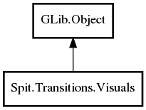

Visuals
Object Hierarchy:

Description:
public class Visuals :
Object
Visuals contains the pertinent drawing information for the transition that must occur.
A Visuals object is supplied to Effect at the start of the transition and
during each call to paint to the screen.
Note that if starting with a blank screen, from_pixbuf will be null and from_pos will be zeroed. The transition should be considered to
start from a blank screen of the supplied background color.
Also note that if transitioning to a blank screen, to_pixbuf will be null and to_pos will be zeroed. Like the prior case, the transition
should move toward a blank screen of the background color.
Namespace: Spit.Transitions
Package: shotwell-plugin-dev
Content:
Properties:
-
public
Pixbuf? from_pixbuf { get; }
Returns the starting pixbuf (the pixbuf currently on the display).
-
public
Rectangle from_pos { get; }
Returns the position of the starting pixbuf on the display.
-
public
Pixbuf? to_pixbuf { get; }
Returns the ending pixbuf (the pixbuf that the transition should result in).
-
public
Rectangle to_pos { get; }
Returns the position of the ending pixbuf on the display.
-
public
Color bg_color { get; }
Returns the background color of the viewport.
Creation methods:
-
public Visuals (
Pixbuf? from_pixbuf, Rectangle from_pos, Pixbuf? to_pixbuf, Rectangle to_pos, Color bg_color)